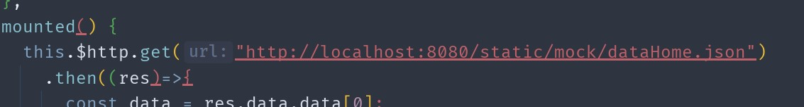
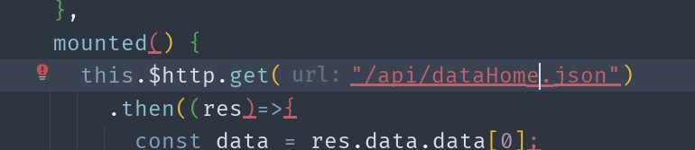
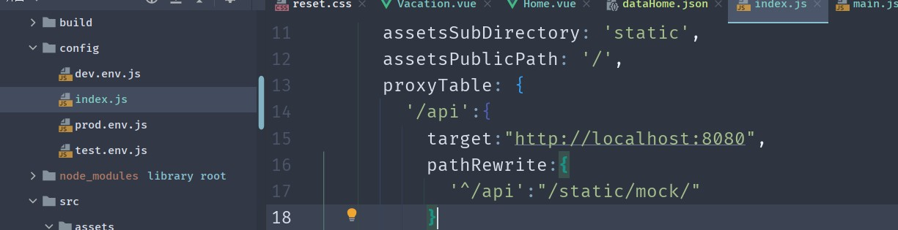
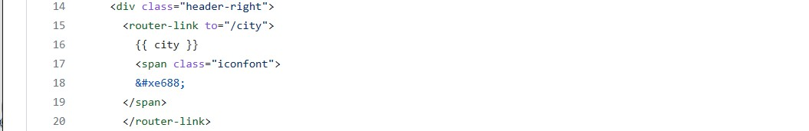
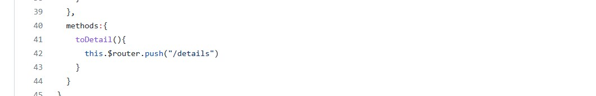
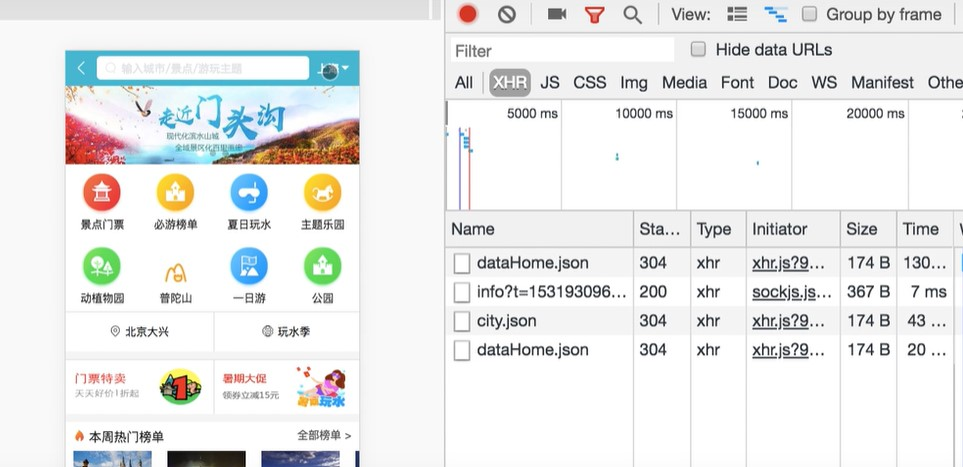
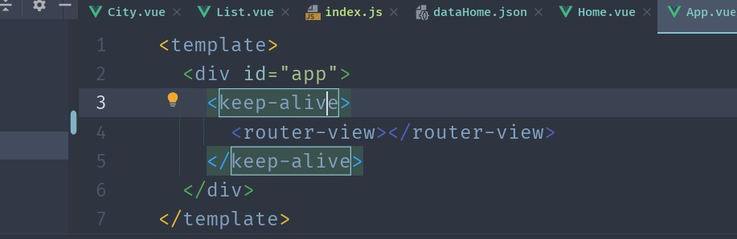
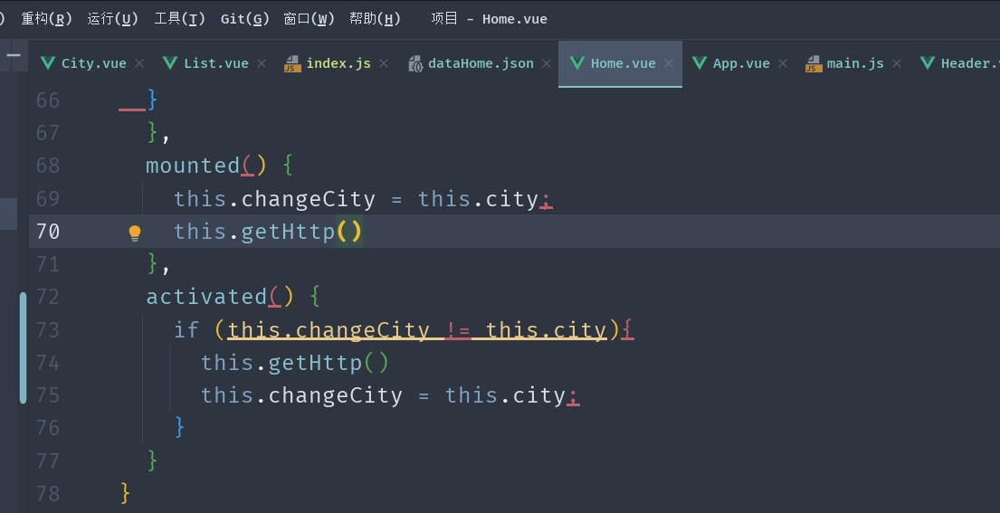
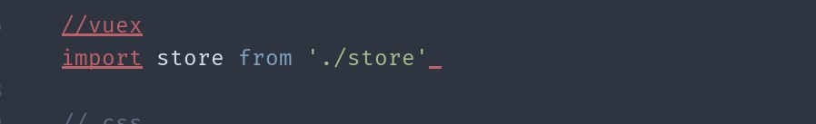
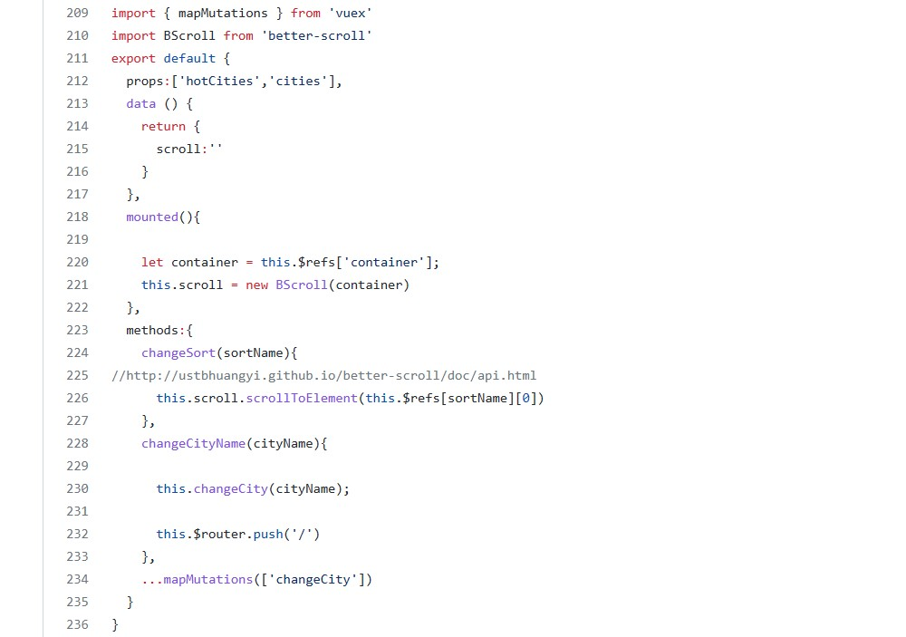

css部分
解决文字溢出的方法：
textOverflow()
white-space:nowrap;
text-overflow:ellipsis;
overflow:hidden;
表格边框写法
首页数据前台接口部分
优化冗余路径
把http://localhost:8080/static/mock 冗余的路径替换成api


修改系统文件，在webpack下设置代理项，重置路径

vue路由
项目中使用到的路由跳转的方法
router-link
实现hot页面上点击的城市渲染到header上

不带参数
<router-link :to = "{name:'home'}">建议使用name<router-link :to = "{path:'/home'}">router-link中链接如果是’/‘开始就是从根路由开始,如果开始不带’/‘,则从当前路由开始
带参数
<router-link :to="{name:'home',params:{id:1}}">
params传参(类似post) 配置path:”/home:id”或path:”/home/:id”,刷新页面id会保留，不配置path；第一次可请求，刷新页面id会消失
<router-link :to = "{name:'home',query:{id:1}}">
query传参(类似get，url后面会显示参数)路由不可配置
this.$router.push()(函数里调用)

不带参数
this.$router.push('/home')this.$router.push({name:'home'})this.$router.push({path:'/home'})query传参
this.$router.push({name:'home',query:{id:'1'})this.$router.push({path:'/home',query:{id:'1'}})params传参
this.$router.push(name:'home',params:{id:'1'})只能用name
keep-alive减少相同请求优化
keep-alive本身是vue2.0的功能，为了让组件数据缓存，避免每次资源加载重复请求
- 不切换城市的时候不需要重新发送dataHome请求
 - 设置keep-alive
 - 需要重新设置Home里的请求数据的方法getHttp（）

vuex实现子组件到子组件的通信
项目中除了从City页面中的子页面到Home中的子页面用的是子组件的通信，其他的都是父组件到子组件通信
- 点击hot页面的城市跳转到首页并且header右边的城市变为相对应的城市
项目相关配置

List文件下配置

bug
scroll
在实战中发现多次通过路由切换组件页面滚动和点击事件都会失效
解决方法：
初始化
首先要引入组件，需要dom结构加载完成时才执行初始化（$nextTick）。因此，需要用上钩子函数created()或者mounted()。
1 | <div class="wrapper" ref="wrapper"> |